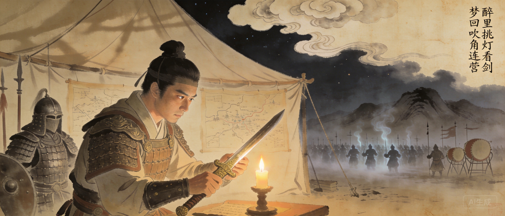

字幼安，号稼轩。生于金国占领下的山东。
二十二岁率两千人参加耿京义军。
率五十骑突入五万金兵大营，生擒叛徒张安国。时年二十三岁。
上书分析宋金战略。不被采纳。
屡遭弹劾，闲居上饶带湖，建稼轩。
六十四岁被起用，镇守京口。
北伐搁浅。临终大呼「杀贼！杀贼！」年六十八。
辛弃疾是中国文学史上最「割裂」的存在。二十三岁能五十骑擒叛徒、破五万敌军大营的猛将，此后四十五年再未上过战场。他一生都活在「应该是什么」和「实际是什么」的巨大张力中——而这股力量全被压进了他的词里。苏轼的豪放是豁达——「也无风雨也无晴」；辛弃疾的豪放是愤怒——「把吴钩看了，栏杆拍遍，无人会，登临意」。前者底色是和解，后者底色是永不妥协。
二十三岁能五十骑擒叛徒的猛将，此后四十五年再未上过战场。
苏轼的豪放是豁达，辛弃疾的豪放是愤怒。前者底色是和解，后者是永不妥协。
临终前仍大呼「杀贼！杀贼！」——一个一生没有打过仗的将军，用他最后的力气喊出了此生未竟的愿望。
辛弃疾一生以孙权为精神偶像。「年少万兜鍪，坐断东南战未休。天下英雄谁敌手？曹刘。生子当如孙仲谋。」
辛弃疾是中国文学史上最「割裂」的存在。二十三岁就能五十骑闯五万敌军大营生擒叛徒的天才武将，此后四十五年再未上过战场。苏轼的豪放底色是豁达——「也无风雨也无晴」。辛弃疾的豪放底色是愤怒——「把吴钩看了，栏杆拍遍，无人会，登临意」。他把打不了仗的每一分力气都变成了词，于是有了宋词中最汹涌的力量。临终大呼「杀贼！杀贼！」——一个一生没打过仗的将军，用最后的呼吸喊出了此生未竟的愿望。
辛弃疾投奔的义军首领。被叛徒张安国杀害。
辛弃疾最推心置腹的朋友。《破阵子》即为陈同甫所赋。
两位南宋最伟大的爱国诗人，晚年曾有一次会面。